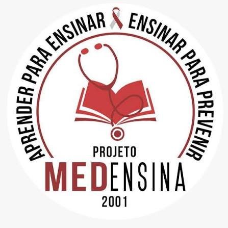

O ingresso no Projeto MEDensina acontece por meio de um processo seletivo, destinado a alunos de Medicina, Odontologia ou Enfermagem, de instituições públicas ou privadas. O processo seletivo é dividido em duas fases:
Nesta primeira etapa, são disponibilizadas 30 vagas. Os candidatos realizam uma avaliação teórica com 50 questões objetivas. Os conteúdos cobrados na avaliação correspondem aos temas apresentados no Ciclo Externo e no Simpósio do projeto.
O Ciclo Externo consiste em apresentações ministradas pelos membros do projeto sobre diferentes temas que posteriormente poderão ser cobrados na prova de seleção. As palestras acontecem na Faculdade de Medicina, às terças-feiras. Além de contribuir para a preparação dos candidatos, cada palestra realizada no Ciclo Externo atribui 0,5 ponto na prova de seleção do participante.
Após a primeira fase, 25 vagas são destinadas à segunda etapa do processo seletivo. Nesta fase, os candidatos deverão realizar uma apresentação oral em nível de comunidade, com duração de 15 minutos. Os temas das apresentações são sorteados em reunião após a primeira fase.
Prepare-se, participe do processo seletivo e venha fazer parte do Projeto MEDensina. Aprender para ensinar. Ensinar para prevenir.